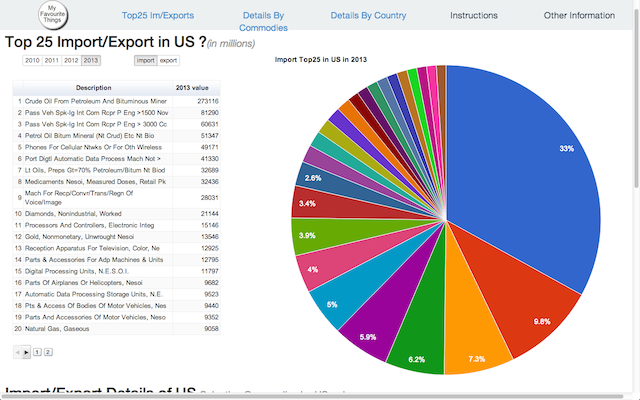
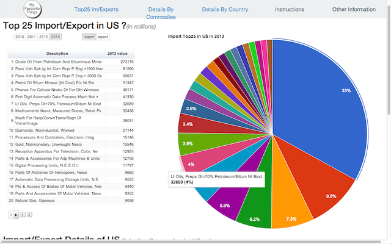
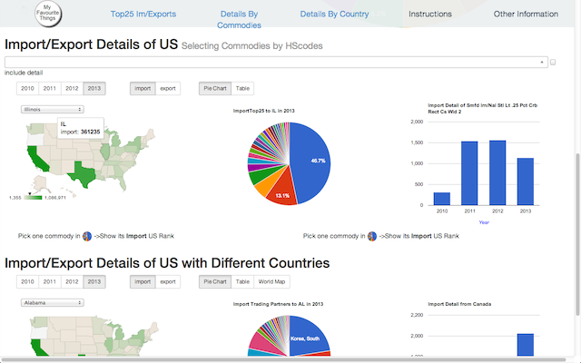
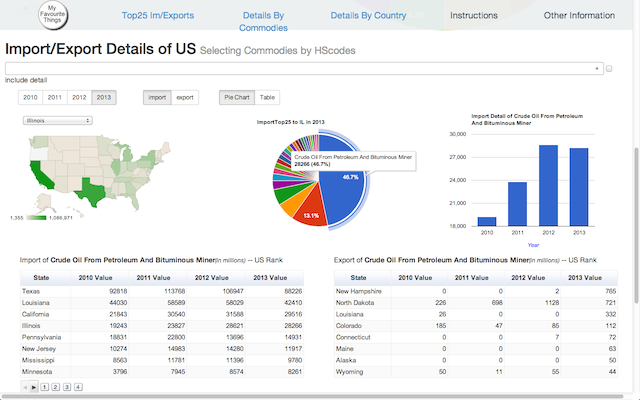
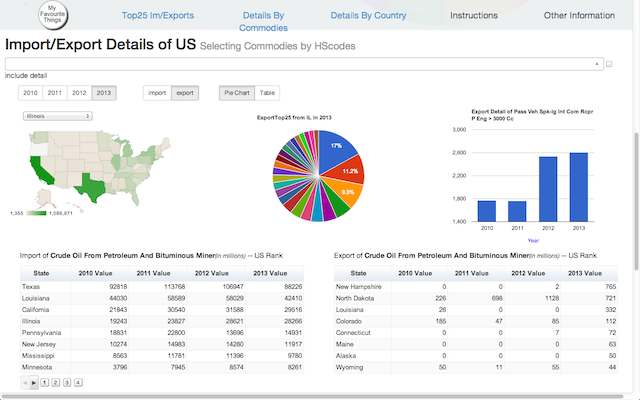
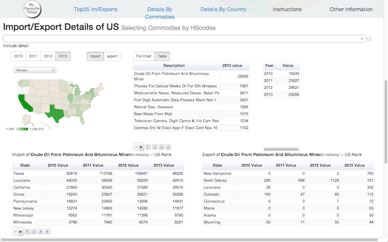
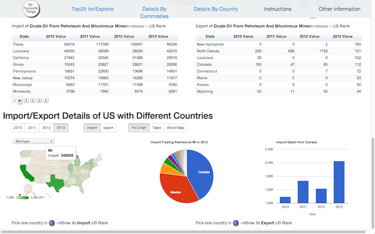
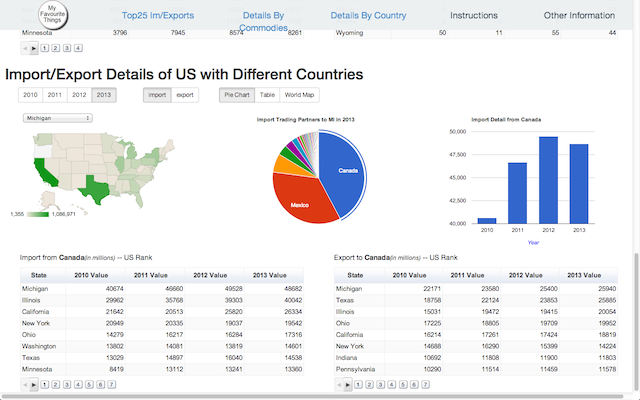
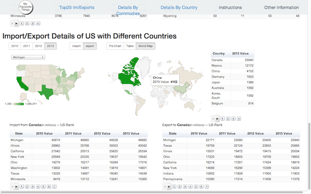

The goal of this project is to present interesting and useful visualizations for US imports and exports with information from the US Census. It makes use of different Google Visualizations to provide interactive charts and tables. A walkthrough of the features of the visualizations are below. We hope you enjoy using it and find some interesting information
When the page is first loaded you can see the page navigation functions at the top of the page. Click one of them to view different types of information. The first thing you see is a table and pie chart of the top 25 imports of 2013. You can use the toggles for year and import/export to view different information.
The pie chart shows the same information, but in a graphic view. Here, the most imported/exported commodities are represented by a greater percentage of the pie. Hover over any of the slices to view the commodity represented by each slice.
The next type of information shown is the import/export information for specific commodities. You can see a map of the US with the colors representing a higher amount of commodities (in millions of dollars)imported or exported by state. Hover over a state to view the exact amount. You can also click on a state which will update the rest of the charts.
This pie chart shows the top 25 imports or exports for that state. Hover over any of the slices to view the commodity represented by each slice. Clicking on any of these slices updates both the column chart on the right and the two tables underneath with information for that commodity. The column chart shows the amount of imports or exports for that commodity by year. The left table on the bottom shows the other states which imported that specific commodity. The right table on shows the other states which imported that specific commodity.
Just like the top visualization, you can toggle between the years and import/export to view more information.
You can also view this information as a table, if you prefer, by choosing the "Table" toggle.
The last set of visualizations looks similar to the previous one, but shows the countries with which a state imports and exports with. The US chart shows the states with the highest amount of imports/exports. Again you can click on a state which will update the rest of the charts with information for that specific state.

The pie chart will update with the countries with which a state imports and exports the most as a larger piece of the pie. You can hover to view more information or click to update the column chart and the two tables underneath with more information for that country.
There is one more view for this information which is a world map. View this map by clicking on the "World Map" toggle. Similar to the US map, countries with a higher number of imports or exports is represented by a darker color.